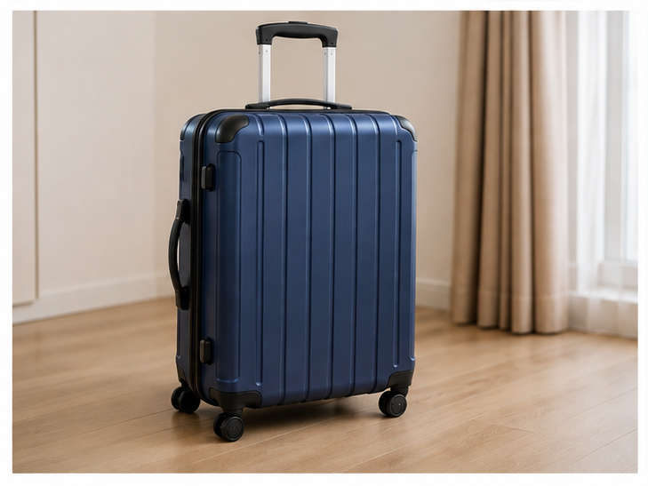

Bài 2 · 模拟测练 Simulated Practice
你们想吃什么就点什么
Các bạn muốn ăn gì thì gọi món đó
🎧
Nghe hiểu 一、听力 Listening
🎧 Audio nghe — cả bài (10 câu)
第一部分 Part I
第1–3题：听对话，选择最匹配的图片。每题听两次。
Bnhân viên giao hàng chạy xe máy
C
đôi đũa gác trên bát
Dnữ nhân viên đang nghe điện thoại
例如 Ví dụ：
男：喂，请问张经理在吗？
女：他正在开会，您半个小时以后再打，好吗？
→ D
第二部分 Part II
第4–6题：听对话，选择正确答案。每题听两次。
例如：
女：我需要搬一些椅子到楼上办公室，你能来帮忙吗？
男：没问题，我再叫几个人来帮你。
问：他们要把椅子搬到哪儿？
A 教室 B 办公室 ✓ C 体育馆
第三部分 Part III
第7–10题：听一段话，选择正确答案。每题听两次。
例如：
那个年轻人刚来公司不久，很有工作热情，人也很聪明。
问：关于那个年轻人，可以知道什么？
A 很聪明 ✓ B 是留学生 C 爱踢足球
Chọn đáp án rồi bấm “Chấm điểm” ở thanh dưới cùng để tự kiểm tra.
第一部分 Part I
第11–15题：匹配句子。
A 别着急，现在是午饭时间，所以有点儿慢。
B 没有，但是每个菜都有一张照片，您可以看照片点菜。
C 没问题，我什么都会做。
D 我妈妈做的鸡肉面，谁吃了都说好吃。
E 当然。我们先坐公交车，然后换地铁。
F 我家只有筷子，用筷子吃吧。
例如：你知道怎么去国家图书馆吗？ → E
第二部分 Part II
第16–20题：选词填空。
A 好久
B 尝
C 记
D 马上
E 鞋
F 简单
例如：中间那双（ E ）是谁的？
第三部分 Part III
第21–24题：选择正确答案。
0 / 14 câu
第一部分 Part I
第25–27题：根据拼音写汉字。 — Viết chữ Hán đúng theo pinyin cho sẵn, rồi bấm "Chấm điểm".
例如：咱们一会儿（ dǎ 打 ）车回家吧。
0 / 3 câu
第二部分 Part II
第28–30题：看图，用词造句。 — Phần này có nhiều cách viết đúng nên không tự chấm điểm, bấm "Xem câu ví dụ" để đối chiếu.
例如：(cậu bé đang nhảy lên, vẻ mặt vui sướng) 开心 → 他开心得跳起来了。